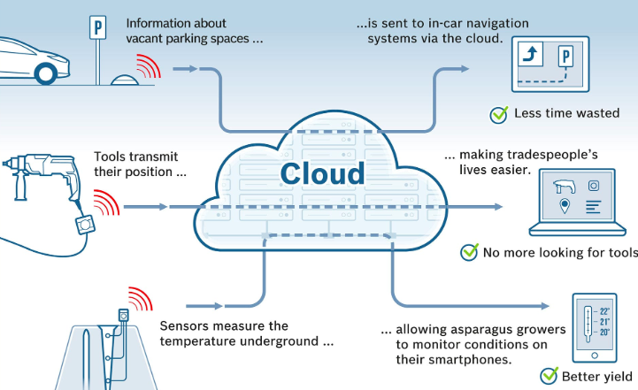
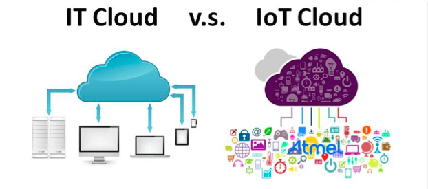

Garner, a research and advisory company, said that the Internet of Things will reach 26 billion installed units by 2020. One main challenge is how do we deal with the large amount of data produced by these devices. These data need to be stored, accessed, and processes and this is where cloud comes into picture. And we can say that cloud computing will be the backbone for IoT and Big Data development.

Image Source
Although there are many could services launched by companies such as Apple’s iCloud, Google Cloud, Microsoft OneDrive, these cloud computing systems are used for personal computers. We need something can provide intensive support for IoT devices. Below, I point out some challenges that the Internet of Things face and how the cloud solve these issue.

Image Source
First, we have to figure out how our machinery will work in the hardware aspects, such as making devices embedded with sensors, connecting devices to the internet or other devices. Then we have to develop the software to handle data collection. Finally, these IoT devices will be integrated with our backend server.
However, when we are developing IoT, we want to focus on hardware and software itself, and don’t want worry about server setup, network configuration, and database connection. Cloud can provide the solution to these difficulties.
What we have to do on cloud? Just apply a virtual server, and launch a database instance to run out IoT solution.
It is not hard to picture how difficult it can be to secure tens of thousands of devices in the hands of users. If one of these devices was exploited by hacker, and many devices are interconnected. It may lead to the sensitive information being compromised and irremediable loss.
Cloud can help secure the device itself and the backend side. Cloud provider has an identity management solution that can be integrated with our IoT, so users can sign in their devices safely. Also, cloud providers have tools for setup of Firmware-Over-The-Air (FOTA) and software updates to prevent the hacker from exploiting the vulnerability by outdated firmware.
The purpose of IoT is to connect all things. But it cannot be fully realized without the cloud. IoT cloud help us speed up the IoT development, store and process the large amount of data, provide infrastructure resources we can use, secure our IoT solution, and even integrate our devices with system and other devices. Therefore, It is not too much to say that cloud services are the Backbone of IoT.